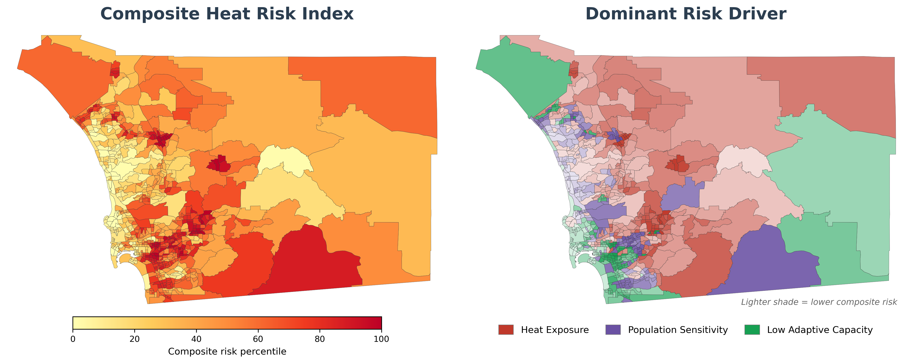
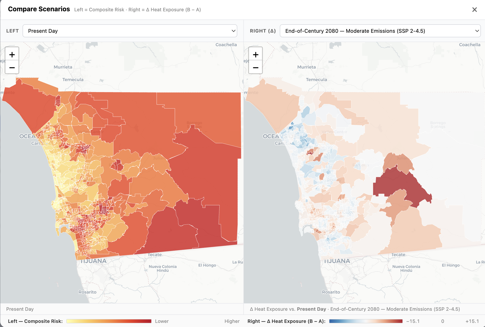

San Diego Heat Risk Explorer user guide
A primer on variables, methods, and map interpretation.
The Heat Risk Explorer is an interactive heat-risk map of San Diego County at the census-tract level. You select variables such as heat exposure, demographics, health conditions, air conditioning access, green space proximity, and income. The tool then returns a composite Heat Risk Index and the dominant driver for each census tract.
Watch our webinar for more details on the Heat Risk Explorer from the SDRCC and SIO team.
Open the map →Quick start
Click Open the map above, then:
- Default variables are already selected. Click Build Composite Risk Map.
- Click any census tract to see its Heat Risk Index and dominant driver.
- Under Map Layer, switch to Dominant Driver to see which pillar drives risk in each census tract.
- To customize the map, turn individual variables on or off in the left sidebar and rebuild.
Heat Risk Index data inputs
The Heat Risk Index combines three pillars: heat exposure (the physical heat in a given census tract), population sensitivity (who lives there and what makes them more susceptible to heat), and adaptive capacity (the systems and infrastructure that help residents cope with heat). You can include several variables from each pillar, listed below.
Heat Exposure
Heat Exposure is single-select. You choose one of the four heat hazards below, and the tool scores it as the average of its layers. The tool does not combine the four, because they are physically distinct and peak in different places. Daytime and nighttime heat are close to spatially uncorrelated across San Diego County, so blending them would cancel out the pattern in both.
Daytime heat
Mean Daily Maximum Temperature; 85th and 99th Percentile Daily Maximum Temperature (the hottest 15% and 1% of days); and Annual Maximum Temperature. Daytime heat peaks inland.
Nighttime heat
Mean Overnight Minimum Temperature; 90th Percentile Overnight Minimum Temperature (warm nights); and No-Relief Night Fraction (the percent of nights without cooling relief). Nighttime heat peaks in dense urban and coastal census tracts. Warm nights are associated with higher heat-illness risk, especially in older adults.
Humid heat (WBGT)
85th and 99th Percentile Wet-Bulb Globe Temperature, which combines temperature, humidity, sun, and wind into a single heat-safety index. Humidity enters the tool only here, not as a standalone variable, because it changes how dangerous a given air temperature is rather than acting as a hazard on its own.
Surface temperature
Mean Land Surface Temperature from Landsat satellite imagery. It measures the urban heat island as the temperature of the ground surface, not the air.
Population Sensitivity
Health
High Blood Pressure, Current Asthma, Coronary Heart Disease, Cognitive Difficulty, Chronic Obstructive Pulmonary Disease (COPD), Depression, Diabetes, Stroke, Obesity, Frequent Mental Distress, Life Expectancy, Loneliness, Lacks Social/Emotional Support, Heat-Day Hospitalization Rate Ratio, and Warm-Night Hospitalization Rate Ratio. Chronic-disease and social-support prevalence is from CDC PLACES; Life Expectancy is from the Healthy Places Index; the hospitalization rate ratios are from CalHeatScore.
Sociodemographics
Age 65+, Seniors Living Alone (%), Age 17 & Under, Disability, Limited English, Single-Parent Household, Below 150% Poverty, Unemployed, Housing Cost Burden, No High School Diploma, Uninsured, Minority, Multi-Unit Structures, Mobile Homes, Crowding, No Vehicle, Group Quarters, No Internet, Outdoor Workers (Ag+Const, %), Agricultural Workers (%), Food Insecurity, Food Stamp / SNAP Receipt, Housing Insecurity, Lacks Reliable Transportation, Utility Shut-Off Threat, and Energy Burden (% income). Sources: CDC SVI 2022, ACS B11007, ACS C24030, CDC PLACES, and the DOE LEAD Tool.
Social Vulnerability Index (SVI)
Pre-built SVI summary themes: Overall SVI, Socioeconomic Status, Household Disability/Language, Racial/Ethnic Minority, and Housing/Transportation. Source: CDC Social Vulnerability Index (SVI) 2022.
Pollution Burden
Overall Pollution, Ozone, PM 2.5, and Diesel PM exposure. Source: Healthy Places Index.
Higher population sensitivity raises the Heat Risk Index.
Adaptive Capacity
Air Conditioning (AC)
AC Prevalence is the percent of homes with any AC. The sidebar lists two independent estimates. AC Prevalence (LACE) comes from the U.S. Census Bureau's Local Air Conditioning Estimates (LACE) 2023, the Bureau's first official tract-level AC estimates. AC Prevalence (Romitti) comes from Romitti et al. (2022), a published modeled estimate kept for comparison.
Built Environment
Tree Canopy, Park Access, Pre-1980 Housing (%), Pre-1960 Housing (%), Renter-Occupied (%), Green Space (%), and Impervious Surface (%). Sources: Healthy Places Index, ACS B25034, ACS B25003, SanGIS, and NLCD.
Socioeconomic
Income, Above Poverty, Economic, Education, Housing Quality, Transportation, Social Cohesion, Neighborhood Quality, Health Insurance, Automobile Access, Homeownership, Commute Time, Voter Participation, and Retail Food Access. Source: Healthy Places Index.
Higher adaptive capacity lowers the Heat Risk Index.
How the pillars combine
Each pillar score ranks a census tract relative to the others in San Diego County. Heat Exposure is the average of the layers in the heat mode you selected. Population Sensitivity and Adaptive Capacity are weighted combinations of the variables you turned on. The tool percentile-ranks all three, and the Heat Risk Index is their mean, a single value from 0 to 100 for each census tract.
The tool does not double-count correlated variables. Lower-income tracts tend to have older housing, less tree cover, and higher chronic-illness rates. A direct sum would count that shared pattern several times. Within Population Sensitivity and Adaptive Capacity, the tool uses Principal Component Analysis (PCA), a statistical method that finds the main patterns shared by a set of correlated variables, so it counts each shared pattern once. Heat Exposure does not use PCA. A heat mode is a small set of measurements of one physical hazard, so the tool averages its layers.
Adaptive-capacity variables enter the score with the opposite sign. A census tract with strong protective resources receives a lower Heat Risk Index even when its exposure is high.
Reading the map
Color
Darker colors mean higher risk. The composite map shades from light yellow to dark red, with the highest Heat Risk Index in the darkest red. Single-pillar views use the pillar's color: red for Heat Exposure, purple for Population Sensitivity, and green for Adaptive Capacity.
The Dominant Driver map uses the same three colors to show which pillar drives each census tract's risk. Lighter shades mean lower composite risk. Green marks census tracts where low adaptive capacity is the leading driver, so it flags a shortfall in cooling resources, not an abundance of them.
Checking Colorblind-friendly colors (bottom right of the map) replaces this scheme everywhere. The composite ramp becomes viridis (purple through green to yellow), and the three drivers become orange (Heat Exposure), yellow (Population Sensitivity), and blue (low Adaptive Capacity).
Index interpretation
The Heat Risk Index is a relative percentile, not absolute risk. A Heat Risk Index of 75 means the census tract is at higher risk than 75% of San Diego County census tracts. It does not mean 75% of residents will be harmed.

Map layers
- Composite Risk (left panel): the 0–100 Heat Risk Index combining all three pillars (default view).
- Dominant Driver (right panel): colors each census tract by the pillar that contributes most to its Heat Risk Index. This separates hotspots driven by Heat Exposure from those driven by Population Sensitivity or low Adaptive Capacity. Click a census tract to see all three pillar scores.
- Driver Mix: blends all three drivers instead of showing only the largest. A census tract's color shifts toward its highest-ranked driver and turns white when the three are balanced. Lighter shades still mean lower composite risk. Use this layer to find census tracts with two comparable drivers, which the Dominant Driver map reduces to one.
- Primary Spatial Patterns: this drop-down menu lists the independent patterns that Principal Component Analysis finds within each pillar's selected variables. Each entry reads <Pillar> — Pattern N (X% var), where N ranks the pattern by importance within that pillar and X% is the share of that pillar's variance the pattern explains. The menu also holds the Heat Exposure score, which is not a PCA pattern. Hover over the blue information icons to see which variables contribute most to each pattern.
Census tract panel
Click a census tract to see its three pillar scores, Heat Risk Index, and dominant driver, and to compare it with other census tracts.
Sidebar panel
The left sidebar has these sections, from top to bottom:
- Heat Exposure: a single-select list of the four heat hazards. Picking one replaces the exposure score rather than adding to it, so this section has no header checkbox.
- Population Sensitivity / Adaptive Capacity: checkbox groups. A pillar's header checkbox turns the whole pillar on or off. Expand a category (Health, Sociodemographics, Air Conditioning (AC), Built Environment, etc.) to turn individual variables on or off.
- Build Composite Risk Map: combines the variables you selected into a Heat Risk Index for every census tract.
- Map Layer: choose Composite Risk, Dominant Driver, a single pillar score, a single raw variable, or one of the Primary Spatial Patterns.
- Jurisdictions: overlay city or tribal-land boundaries on the map.
- Climate Scenario: change the temperature variables to projected mid-century (2050) or end-of-century (2080) values under different emissions pathways, described under Future scenarios below.
- Export: save the current map as a PDF, or download the underlying census-tract-level data.
About the data download. Download Data saves a CSV or GeoJSON file of every tract, plus a data dictionary named <name>_data_dictionary.csv. Columns in the data file use raw variable keys such as EP_NOINT or shututility_prev. The dictionary gives each column a plain-English label, its pillar, its units, whether a higher value means more or less heat risk, and a link to the original source. The dictionary's header also records the heat mode, climate scenario, and variables used to compute the index columns, so you can reproduce the download. GeoJSON files carry the same information in a metadata object.
Two cautions before you analyze the data:
adaptive_scoreruns in the capacity direction, where 100 means the most capacity and the least risk. That is the opposite ofexposure_scoreandsensitivity_score._sd_pctilecolumns always rank against all San Diego County tracts, even when you export a single city.
The download leaves out a few variables that appear on the map, because their sources' terms don't allow us to redistribute them. These are the Healthy Places Index variables (non-commercial license) and the CalHeatScore heat-hospitalization variables (no published license). The dictionary lists each one with in_download = no and a note on where to request the data. Everything in the download is public domain or openly licensed. DATA_LICENSE.md has the full provenance audit.
Future scenarios
Three buttons at the top of the Climate Scenario panel switch the temperature variables between time periods:
- Present Day: current conditions, from the sources listed under Data sources.
- 2050: mid-century mean (2035–2064) from LOCA2-downscaled CMIP6 projections.
- 2080: end-of-century mean (2065–2094) from LOCA2-downscaled CMIP6 projections.
Selecting 2050 or 2080 opens an emissions-pathway selector with three Shared Socioeconomic Pathways (SSPs), explained in this Carbon Brief article:
- Moderate Emissions (SSP 2-4.5): emissions decline but not aggressively.
- High Emissions (SSP 3-7.0): emissions remain high.
- Very High Emissions (SSP 5-8.5): unchecked fossil-fuel use.
The Compare Scenarios Side-by-Side button, below the emissions-pathway selector, opens two maps. The left map shows the Heat Risk Index under one scenario. The right map shows the change in Heat Exposure pillar rank between two scenarios you choose, as scenario B minus scenario A. The change is in percentile points on the 0–100 pillar scale, not in degrees of warming. You can set the scenarios for each map independently.
Why percentile rank instead of degrees? Across San Diego County, LOCA2 projects similar absolute warming for every tract, typically about 1–3 °C between scenarios. A map of the change in °C would look nearly uniform. The percentile-rank map shows which tracts move up fastest in Heat Exposure relative to the rest of the county. To see the change in degrees, hover over any tract on the right map. The tooltip shows that tract's LOCA2 change in mean Tmax and mean Tmin in °C.

The tool keeps Population Sensitivity and Adaptive Capacity variables at present-day values, because reliable long-range projections of demographic, health, and infrastructure conditions don't yet exist at the census-tract level.
Examples
Each example narrows one pillar to a single question and leaves the other two at their defaults, so the Heat Risk Index still reflects who is hot, who is vulnerable, and who can cope.
Start from the defaults, not from everything. The tool opens with a small selection: Overall SVI, Age 65+, and Heat-Day Hospitalization Rate Ratio for Population Sensitivity; AC Prevalence (LACE), Tree Canopy, and Income for Adaptive Capacity; and the Daytime heat mode for Heat Exposure. Avoid turning on all 73 Population Sensitivity and Adaptive Capacity variables. With that many, each pillar's PCA settles on a generic pattern in which everything correlates, and the map loses its spatial contrast. Unless an example says otherwise, leave the other pillars as they are.
The viewer can also run Example 1 for you. The last step of the welcome tour has a See worked example button that performs each step automatically.
Example 1: Where are children most at risk due to heat stress?
- Click the Population Sensitivity header checkbox to clear that pillar, then expand Sociodemographics and check only Age 17 & Under.
- Leave Heat Exposure on Daytime heat and leave Adaptive Capacity at its defaults.
- Click Build Composite Risk Map.
- The Population Sensitivity score now reflects only the Age 17 & Under variable. Census tracts that are dark on the map and have Population Sensitivity as their Dominant Driver are where children face the most heat risk.
Example 2: Where would people benefit most from subsidies to purchase AC units?
- Click the Adaptive Capacity header checkbox to clear that pillar, then expand Air Conditioning (AC) and check only AC Prevalence (LACE).
- Leave Heat Exposure and Population Sensitivity at their defaults.
- Click Build Composite Risk Map.
- The Adaptive Capacity score now ranks census tracts only by how few homes have AC. The darkest census tracts are hot, have sensitive populations, and lack AC, which makes them priority areas for an AC-subsidy program.
Two AC estimates are available. AC Prevalence (LACE) is the Census Bureau's official tract-level estimate, and AC Prevalence (Romitti) is a published modeled estimate. Rerun the example with the other source to check whether a tract's ranking depends on which estimate you use.
Example 3: Where is nighttime heat most dangerous?
- Under Heat Exposure, select the Nighttime heat mode. This replaces the whole exposure score with the average of Mean Overnight Minimum Temperature, 90th Percentile Overnight Minimum Temperature, and No-Relief Night Fraction.
- Leave Population Sensitivity and Adaptive Capacity at their defaults.
- Click Build Composite Risk Map.
- The Heat Exposure score now ranks census tracts only by how warm their nights are. The darkest census tracts combine severe overnight heat with vulnerable populations and limited capacity to cool down.
This map will look different from the default. Nighttime heat peaks in dense urban and coastal tracts, and daytime heat peaks inland. Across the county, the two are close to spatially uncorrelated. To see which communities are exposed to one but not the other, switch back to Daytime heat and rebuild.
Feedback & bug reports
To submit a correction, comment, or feature request, email cjmack@ucsd.edu.
Data sources
| Variable | Source |
|---|---|
| Heat exposure | |
| Air temperature (daytime & overnight) | MesoWest / Synoptic Data |
| Humid heat (Wet-Bulb Globe Temperature) | NOAA HRRR |
| Land surface temperature | USGS Landsat |
| Future temperature projections | LOCA2 downscaled CMIP6 |
| Population sensitivity | |
| Chronic disease & social needs | CDC PLACES |
| Social vulnerability | CDC SVI 2022 |
| Heat-related hospitalizations | CalHeatScore (CalEPA / OEHHA) |
| Energy burden | DOE LEAD Tool (2022) |
| Demographics, housing & occupation | ACS 5-year estimates |
| Adaptive capacity | |
| Income, education, healthcare, parks & tree canopy | Healthy Places Index (HPI) |
| Air conditioning prevalence | U.S. Census LACE 2023; Romitti et al. (modeled) |
| Impervious surface | NLCD (MRLC) |
| Green space & land use | SANDAG / SanGIS |
| Reference map layers | |
| Population density | EPA EnviroAtlas |
| Excess heat-related ER visits & heat-risk thresholds | UCLA Heat Maps (from California HCAI emergency-department records) |
| Unsheltered people (January 2026 count) | Regional Task Force on Homelessness point-in-time count, by census tract |
| Electricity-dependent residents | HHS emPOWER (Medicare beneficiaries on electricity-dependent medical equipment, by ZIP code) |
| Power shutoffs (2024–25) | SDG&E post-season reports to the CPUC, by census tract |
| Cool-zone cooling sites | San Diego County Cool Zones, from the County HHSA site list & SanGIS feature service (designated sites only) |
| Geography & derived layers | |
| Census tract & city boundaries (also the geometry in GeoJSON downloads) | U.S. Census Bureau TIGER/Line |
| Composite risk, pillar scores & percentile ranks | Computed by this project, licensed CC BY 4.0 |
Each variable name in the tool has a small (Source) link that opens the original source.
Webinar
Watch the webinar at youtube.com/watch?v=YUXmkqhmQB0.
© 2026 Southern California Extreme Heat Research Hub & San Diego Regional Climate Collaborative. Code licensed MIT; data & content CC BY 4.0, with each source under its own terms.